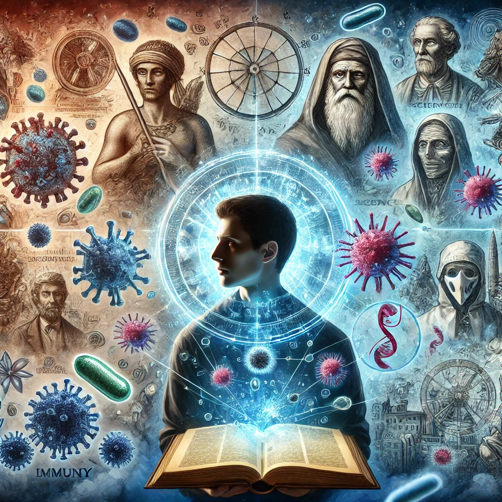

면역에 관하여
목차
작가
율라 비스
출판일
2014년
감상평에 대한 AI그림
면역에 대한 역사적인 이야기들과 사회적인 시선에서의 면역에 관해 작가가 여러 이야기를 해준다.
많은 생각을 하게 되고 이해하기 조금 어려운 책이었다.
하지만 처음 들어보는 이야기들이 많아서 흥미로웠다.

감상평에 대한 AI평가
지적 호기심 (흥미로움, 신선함): "처음 들어보는 이야기들이 많아서 흥미로웠다."
✨ 도전적인 느낌 (어려움, 깊은 사고 요구): "많은 생각을 하게 하는 어려운 책이었다."
✨ 객관적이고 분석적인 태도: 책의 사회적 시선과 역사적 이야기에 대한 언급이 있으며, 긍정적이지만 감정적으로 크게 치우치지 않음.
✨ 전반적으로 도전적이지만 가치 있는 독서 경험이었다는 평가이며, 어려움 속에서도 새로운 지식을 얻는 것에 대한 긍정적인 반응이 포함되어 있습니다. 😊